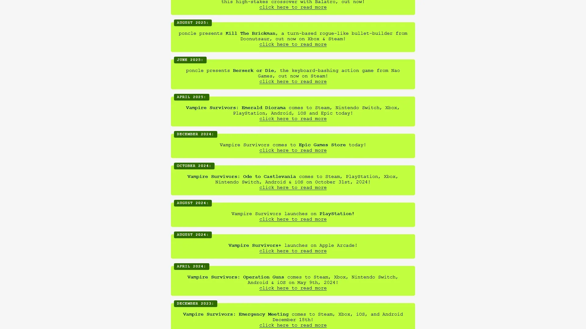
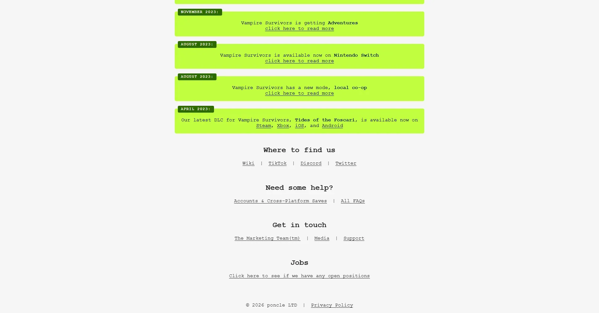

极简Roguelike弹幕生存，像素美术+爽感设计教科书。


想象一片哥特风格的像素原野——月光下的森林、古旧的图书馆、废弃的教堂。场景简陋到你会怀疑这是不是免费手游——直到屏幕上同时涌出三千只怪物。这一刻你明白了：背景不重要，因为真正的风景是你亲手制造的弹幕混沌。数十个投射物同时飞行——十字架旋转、圣水倾泻、大蒜光环脉冲——整个屏幕变成了像素粒子的烟花秀。poncle 一个人做出了这一切，美术预算接近于零。
你是幸存者——没有名字、没有剧情、没有拯救世界的使命。你站在空旷的地图上，无限涌来的怪物是唯一的真实。武器自动发射——你不需要按攻击键，只需要移动和每次升级时在 3 秒内做出决策。小十字架 → 全屏十字架光柱、鞭子 → 覆盖半屏的血鞭——每次进化都是从无名小卒到全屏毁灭者的蜕变叙事。
那个你第一次全屏进化完成的瞬间，金币和经验宝石铺满了整个画面——你终于理解了「丑但爽」的真正含义；那个 30 分钟后死神出现的画面，巨大的黑影让你之前的所有强大瞬间化为泡影；那个 BAFTA 颁奖夜这款 2 美元游戏击败 3A 大作的事实，证明了玩法的力量可以压倒一切美术预算。这不是一个关于英雄的故事，是一个关于「混沌本身能不能成为美学」的故事——怪物已经在涌了，你选哪把武器开局？
像素弹幕混沌 × 恶魔城致敬，是 poncle 把故意极端简陋的像素美术（Asset Flip 级别的角色和场景）和数千同屏单位的弹幕混沌反直觉地组合成了全新视觉品类的极简美学。底色是恶魔城式的哥特中世纪像素风；变异在于混沌本身成为了美学——屏幕被投射物和敌人填满时的视觉过载反而令人上瘾。色彩锁定经验蓝 + 金币黄 + 哥特暗红三色组合。整体调性介于《恶魔城》经典像素和弹幕射击游戏的视觉过载之间——故意做丑，然后在丑上建立了自成一格的美感。
「像素美学+弹幕+Roguelike」的组合跨越了四十年。1986 年《恶魔城》初代奠定了哥特像素动作游戏的视觉基底——鞭子、十字架、吸血鬼城堡。1997 年《恶魔城：月下夜想曲》把像素美学推到了 2D 巅峰。2004 年弹幕射击（东方 Project 等）把「屏幕被弹幕填满」做成了独立美学品类。2008 年Flash 游戏和手游浪潮创造了「极简像素+自动战斗」的基因片段。2012 年《Binding of Isaac》证明了故意简陋的美术也能支撑现象级 Roguelike。2022 年《吸血鬼幸存者》把所有这些片段焊在一起——用接近零的美术预算创造了 BAFTA 最佳游戏，并催生了「幸存者类」（Survivors-like）全新品类。
基于体验清单 · 审美偏好 · IP故事三维度综合选出